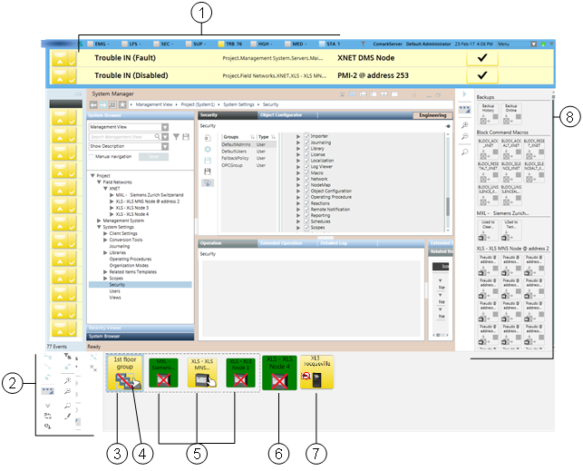
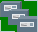
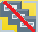
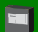
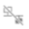
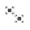

Node Map
This section provides reference and background information about the Node Map application. For related procedures, see the step-by-step section.
Overview
The Node Map is an application for monitoring and controlling your site based on the installed control panels (nodes), represented as graphic symbols that provide a quick status summary. In fact, the graphic symbols show the category color of the most important event, and blink when an event acknowledgement is required. In addition, a red X sign on the symbol represents a communication fault or disconnection from the control panel.
In the Node Map, you can filter the list of nodes by name (or part of the name) and ownership, and you can sort it by event severity. To better represent the architecture of your site, with an appropriate permission, you can rename the nodes and also group them together in meaningful collections represented by a single graphic symbol.
The Node Map is fully integrated with the other system applications. You can select one or more nodes in the Node Map, and then operate on System Manager, Event List, and Macro Viewer on the selected set to see status information and start control actions. The commands to connect/disconnect and to take and transfer the ownership of fire control panels are directly available in the Node Map toolbar.
User Interface

User Interface with the Node Map | |||
| Name | Description | |
1 | Summary bar | Reduced Summary bar. | |
2 | Node Map toolbar | Toolbar with display and control commands. | |
3 | Group node | Symbol representing a group of panels. The initial zoom factor is predefined by the client profile. | |
 | The background color shows the most important event currently active in the group. | ||
 | The red bar means a partial disconnection in the group. | ||
4 | Ownership indicator | A white hand indicates ownership; you have the control of the panel. | |
A gray hand indicates no ownership; another station has the control of the panel. | |||
For node groups, a gray/white hand indicates a partial ownership of the group. | |||
| No hand symbol means that no station has ownership and control is only possible on the panel. | ||
5 | Panel node | Smaller symbol representing a panel belonging to the (expanded) group. | |
6 | Panel node |  | Symbol representing a single panel. |
7 | Silence inhibition | Symbol representing the temporary inhibition of the silence command. | |
8 | Macro Viewer | Macro Viewer application. | |
Node Map Toolbar
| Name | Description |
Connect | Connect the selected nodes (UL panels only). | |
 | Disconnect | Disconnect the selected nodes (UL panels only). |
Request Ownership | Request the ownership of the selected nodes (UL panels only). | |
| Expand/Reduce | Expand and reduce the toolbar. |
Minimize/Open | If enabled, minimize and open the Node Map. | |
Filter Event List | Filter Event List based on the Node Map selection. | |
Sort | Sort the Node Map by alarm status. | |
Filter Map | Filter the Node Map by ownership (UL panels only). | |
Group (Edit mode) | Group the selected nodes. | |
Transfer Ownership | Transfer the ownership of the selected panels (UL panels only). | |
 | Ungroup (Edit mode) | Remove the selected group. |
| Zoom In | Enlarge the size of Node Map. |
| Zoom Out | Reduce the size of Node Map. |
| Show/Hide Search | Add/remove the search field. The view is dynamically filtered to match the text you type in the search field. |
Edit | If enabled, start / stop edit mode. |